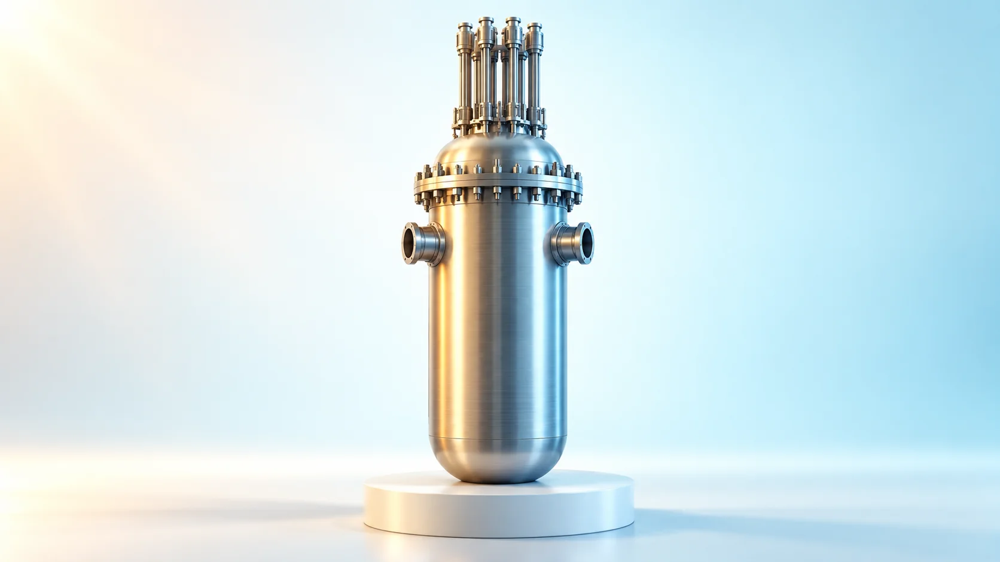

Plant Operation, Control & the Grid · 238
Close the Lid or Open the Back Panel? — Hot Standby and Cold Shutdown in a Nuclear Plant
Both are subcritical. One keeps the water near 290°C for a quick return; the other cools it below boiling so the system can be opened.

Hot standby (Mode 3) and cold shutdown (Mode 5) are both subcritical, with keff below 0.99; what differs is the coolant: about 290°C and 15.5 MPa in hot standby, about 93°C or below in cold shutdown. Staying hot means a quick return; going cold means the primary system can be opened for maintenance. [1]
A work order that has to wait
Work order. Task: replace reactor coolant pump seal parts. Start condition: reactor in Cold Shutdown (Mode 5).
The reactor stopped yesterday, yet the maintenance crew is still waiting. Does a stopped reactor need to "stop" all over again? The secret is that "stopped" comes in grades. Let's look at the two best-known kinds, hot standby and cold shutdown: what they are, and why a plant chooses one or the other.
Even a stopped reactor gets a number
A pressurized water reactor (a reactor that keeps its water under high pressure so it carries heat without boiling) operates under a rulebook called the Technical Specifications. It divides the plant's condition into Modes 1 through 6, using three criteria: how alive the chain reaction is, what percentage of power the plant is producing, and how hot the coolant is.
The first criterion uses keff (the effective multiplication factor): how many neutrons one generation passes on to the next. At 1 (criticality) the chain reaction holds steady; below 1 it dies away. The rules leave a margin by using 0.99 as the dividing line. [1]
| Mode | Name | keff | Other condition |
|---|---|---|---|
| 1 | Power Operation | ≥ 0.99 | thermal power > 5% |
| 2 | Startup | ≥ 0.99 | thermal power ≤ 5% |
| 3 | Hot Standby | < 0.99 | average coolant ≥ about 176.7°C (350°F) |
| 4 | Hot Shutdown | < 0.99 | between 93.3°C and 176.7°C |
| 5 | Cold Shutdown | < 0.99 | average coolant ≤ about 93°C (200°F) |
| 6 | Refueling | – | at least one reactor vessel head bolt not fully tightened |
South Korea's APR1400 uses the temperature in the pipe leading into the reactor (the cold leg) instead, with a cold-shutdown threshold of about 99°C (210°F). Either way the question is the same: has the water cooled enough that it won't boil even at atmospheric pressure? [2]
Plug keff 0.99 into reactivity ρ = (keff − 1) ÷ keff and you get about −1%: the reactor sits more than 1% back from a self-sustaining chain reaction. Modes 3, 4 and 5 are all states in which fission has stopped; what separates them is the water temperature.
![Operating-mode map: the keff at least 0.99 band holds Mode 1 power operation above 5 percent power and Mode 2 startup at or below 5 percent with no temperature limit; the keff below 0.99 band is split along an average coolant temperature axis from 0 to 300 degrees C into Mode 5 cold shutdown at or below 93.3 degrees C, Mode 4 hot shutdown, and Mode 3 hot standby at or above 176.7 degrees C, with a typical state near 290 degrees C and 15.5 MPa; a photo of head bolts explains that Mode 6 is defined by bolt tensioning](../../assets/images/theory/238-hot-standby-vs-cold-shutdown/fig1-mode-map.webp)
A laptop with the lid closed, a laptop with the back panel off
Close a laptop's lid and it sleeps: open it and you're back in seconds, but with the power on you can't take off the back panel. Shut it down completely and booting takes a while, but you can undo the screws and work inside.
Hot standby is the laptop with the lid closed. The chain reaction has stopped, but the coolant stays at about 290°C, much as in operation, and the pressure is held at about 15.5 MPa (roughly 150 times atmospheric pressure). When ready, the control rods are withdrawn to return to criticality, so it comes back relatively quickly with no time spent heating. Cold shutdown is the laptop with the back panel off. The water has been cooled below 100°C, so after the procedures to lower pressure and isolate the systems, pipes can be opened without water flashing out as steam. The analogy has a limit: a laptop is simply off, but a reactor needs its heat removed even after it stops.
The price of staying hot, the price of opening cold
So why not always stay hot? Staying hot takes work. Even a stopped reactor keeps producing decay heat (heat given off as the materials created by fission break down on their own). In hot standby, the steam generators take this heat and turn it into steam, which is released to the condenser or the atmosphere to hold the temperature steady. Feedwater pumps, reactor coolant pumps and pressurizer pressure control must keep running, and the emergency cooling systems for high-pressure accidents must stay ready. None of these can be taken out for maintenance.
In cold shutdown, the water is too cool for the steam generators to make steam anymore, so the low-pressure shutdown cooling system (residual heat removal system) takes over the heat. In exchange, many high-pressure systems are released from standby duty and can be maintained. [3]
Cooling down comes with one condition. A pressurized water reactor is operated so that its temperature coefficient (how much reactivity changes when the temperature rises) is negative, which means that as the water gets colder, it slows neutrons better and reactivity rises:
Δρ ≈ α × ΔT (Δρ: reactivity change, α: temperature coefficient, negative; ΔT: temperature change, negative when cooling)
A negative times a negative: cooling raises reactivity. So before going to cold shutdown, more neutron-absorbing boron is dissolved in the coolant to preserve the shutdown margin (how far below critical the reactor stays even if the single strongest control rod is assumed stuck out) after cooling. Each plant sets its own value; US examples run at roughly 1–2% (Δk/k). [4]
![Comparison table of hot standby (Mode 3) and cold shutdown (Mode 5): coolant typically about 290 degrees C versus 93.3 degrees C or below, primary pressure about 15.5 MPa versus close to atmospheric, decay heat via steam generators versus shutdown cooling, opening the primary system impractical versus possible once depressurized and isolated, return to power relatively fast versus longer; a laptop photo strip and a card showing that cooling raises reactivity so boron is added first, with delta rho approximately alpha times delta T](../../assets/images/theory/238-hot-standby-vs-cold-shutdown/fig2-hot-vs-cold-table.webp)
When the rules say "cool it down now"
Operators usually choose the state to fit the maintenance plan and return schedule: hot standby for a short stop where only the cause needs checking, cold shutdown for work that requires opening the primary system.
Sometimes, though, the rules decide. The US standard Technical Specifications require that if a specified operating condition can't be met and the prescribed actions can't be taken either, the plant must start action within 1 hour and reach Mode 3 within 7 hours, Mode 4 within 13 hours and Mode 5 within 37 hours. These are deadlines, not normal durations. Once there's no basis for staying hot, the default is to go cold. [1]
The seemingly generous 37 hours has a reason. Thick steel like the reactor vessel is overstressed by the temperature difference across its wall if cooled or heated too quickly, so every plant limits its rate of temperature change, typically to about 55°C per hour. Cooling nonstop from about 290°C to 99°C would still take about three and a half hours, and switching systems and depressurizing add much more. Heating back up carries the same limit plus checks, so returning takes far longer than from hot standby. [5]
Three mix-ups caused by similar names
"Hot standby means idling at a little power." No. With keff below 0.99 the reactor is subcritical, with no fission power. It's hot because decay heat and pump heat are removed just enough to hold the temperature.
"In cold shutdown, the reactor head is open." No. Mode 5 assumes every head bolt is fully tightened; once bolts start coming loose, it's Mode 6.
"Hot shutdown is the same as hot standby." Hot standby is Mode 3; hot shutdown is the cooler Mode 4. Nor is the colder state always safer: both are normal stopped states recognized by the rules, with different conditions to meet.
What the work order was waiting for
The reactor had stopped but was still hot, lid merely closed, and pump seals can be reached only by opening the primary system. Only after adding boron, cooling at no more than 55°C per hour and handing the heat to the shutdown cooling system can the crew pick up their tools.
Hot standby is a stop for coming back quickly; cold shutdown is a stop for looking inside. Both are a reactor at rest, but the water temperature depends on why you stopped.